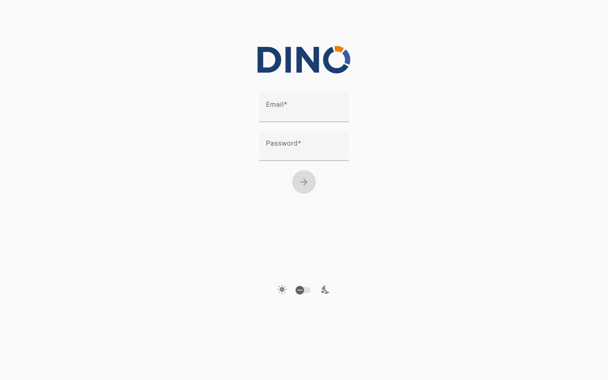

Se connecter à Dino
La page de connexion est le point de départ pour accéder à Dino. Depuis ici, vous pouvez vous connecter à votre compte, créer un nouveau compte ou retrouver l'accès si vous avez oublié votre mot de passe. Selon la configuration de Dino par votre organisation, certaines des options décrites ci-dessous peuvent ne pas être visibles.

Se connecter
Utilisez vos identifiants pour accéder à la plateforme.
- Sur la page de connexion, saisissez votre nom d'utilisateur ou adresse e-mail dans le premier champ.
- Saisissez votre mot de passe dans le second champ.
- Cliquez sur le bouton fléché pour vous connecter.
Si vos identifiants sont corrects, vous serez automatiquement redirigé vers le Tableau de bord.
Si la connexion échoue, un message d'erreur apparaîtra sous le formulaire. Vérifiez que votre e-mail et votre mot de passe sont corrects, en vous assurant qu'il n'y a pas d'espaces superflus, puis réessayez.
Réinitialiser votre mot de passe
Si vous avez oublié votre mot de passe, vous pouvez demander un lien de réinitialisation par e-mail.
Fonctionnalité optionnelle
Cette option peut ne pas être disponible dans votre installation. Si vous ne voyez pas le lien « Mot de passe oublié ? », contactez votre administrateur.
- Sur la page de connexion, cliquez sur « Mot de passe oublié ? » sous le formulaire de connexion.
- Saisissez l'adresse e-mail associée à votre compte.
- Cliquez sur le bouton fléché pour envoyer la demande.
Vous recevrez un message de confirmation en haut de l'écran. Consultez votre boîte de réception pour un e-mail contenant un lien permettant de définir un nouveau mot de passe. Si l'e-mail n'arrive pas en quelques minutes, vérifiez votre dossier de spam.
Pour revenir au formulaire de connexion sans réinitialiser votre mot de passe, cliquez sur « En fait, je me souviens de mon mot de passe ».
Pour plus de détails, consultez la page Réinitialisation du mot de passe.
Créer un nouveau compte
Si vous n'avez pas encore de compte, il peut être possible de vous inscrire directement depuis la page de connexion.
Fonctionnalité optionnelle
Cette option peut ne pas être disponible dans votre installation. Si vous ne voyez pas le lien « Nouvel utilisateur ? Créer un compte », contactez votre administrateur pour qu'un compte vous soit créé.
- Sur la page de connexion, cliquez sur « Nouvel utilisateur ? Créer un compte ».
- Saisissez votre nom complet.
- Saisissez votre adresse e-mail.
- Choisissez un mot de passe (au moins 9 caractères).
- Ressaisissez votre mot de passe dans le champ Confirmer le mot de passe pour vérifier qu'il correspond.
- Si une Politique de confidentialité est affichée, lisez le texte et cochez la case pour accepter les conditions. Vous devez accepter pour continuer.
- Cliquez sur le bouton fléché pour créer votre compte.
Une fois votre compte créé, vous serez connecté et redirigé automatiquement vers le Tableau de bord.
Si vous avez déjà un compte, cliquez sur « Vous avez déjà un compte ? Connectez-vous » pour revenir au formulaire de connexion.
Se connecter avec un compte externe
Votre organisation peut vous permettre de vous connecter en utilisant votre compte Microsoft ou Google existant, sans avoir besoin d'un mot de passe Dino séparé.
Fonctionnalité optionnelle
Cette option peut ne pas être disponible dans votre installation. Les boutons n'apparaîtront que si votre administrateur a activé la connexion externe.
- Sur la page de connexion, cliquez sur « Se connecter avec Microsoft » ou « Se connecter avec Google », selon le compte que vous souhaitez utiliser.
- Vous serez redirigé vers Microsoft ou Google pour confirmer votre identité.
- Après avoir autorisé l'accès, vous serez ramené à Dino et connecté automatiquement.
Paramètres de la page
Un petit ensemble de préférences d'affichage est disponible directement sur la page de connexion.
Thème clair / sombre
Un bouton bascule est disponible en bas du formulaire, entre une icône de soleil et une icône de lune. Cliquez ou faites glisser pour passer du mode clair au mode sombre. Ce paramètre prend effet immédiatement.
Sélection de la plateforme
Fonctionnalité optionnelle
Cette option peut ne pas être disponible dans votre installation. Elle n'est affichée que dans les déploiements multi-plateformes.
Si un menu déroulant « Choisissez votre plateforme » est visible, sélectionnez la plateforme à laquelle vous souhaitez vous connecter avant de vous connecter. Le menu déroulant liste les environnements configurés par votre administrateur.
Dépannage
« Un problème est survenu lors de la connexion au serveur d'authentification ou votre jeton a expiré. »
Warning
Votre session précédente a expiré ou la connexion au serveur d'authentification a été interrompue. Ce n'est pas une erreur de votre part. Saisissez simplement vos identifiants et reconnectez-vous.
« Un problème est survenu lors du processus de synchronisation. »
Warning
Une erreur est survenue lors de la synchronisation de vos données, ce qui peut être lié à une importation récente de formulaires. Vérifiez les formulaires que vous importiez pour détecter d'éventuels problèmes, puis reconnectez-vous. Si le problème persiste, contactez votre administrateur.
« Chargement de l'authentification externe… » sans redirection
Warning
Ce message apparaît brièvement lors de la finalisation d'une connexion via Microsoft ou Google. Si la page ne se poursuit pas automatiquement après quelques secondes, essayez de vous reconnecter. Si le problème se répète, contactez votre administrateur pour vérifier que le service d'authentification externe est correctement configuré.